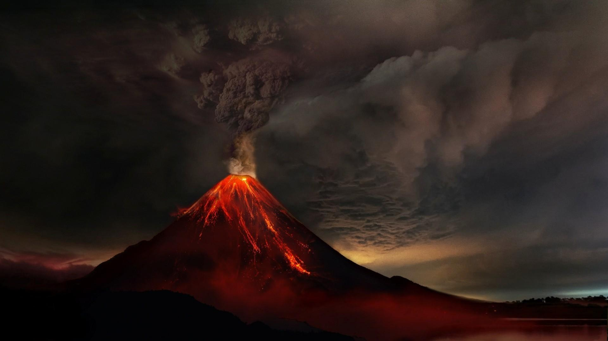
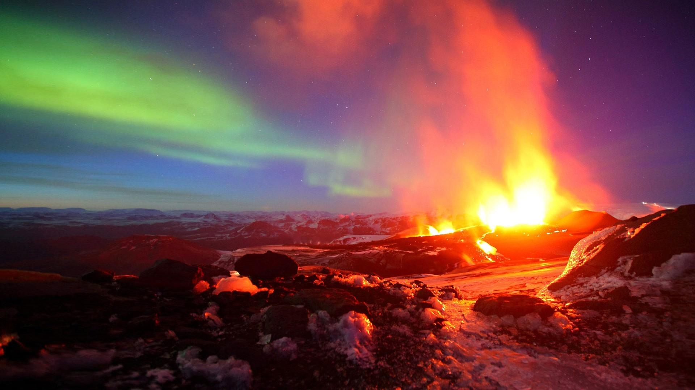

Los volcanes son fascinantes formaciones geológicas con características únicas. Aquí tienes algunas de sus principales características:
Principales
- Por medio de él salen ceniza volcánica, lava y gases.
- Hacen erupción cuando la montaña volcánica se activa.
- Liberan energía capaz de destruir todo a su paso.
- Liberan también cortinas de humo y ceniza.
- Su actividad es imprevisible.


Fisiológicas
- Forma cónica: Generalmente, los volcanes tienen una estructura cónica debido a la acumulación de materiales tras sucesivas erupciones.
- Cráter en la cima: En la cima de esta estructura cónica suele haber un cráter, que es por donde se expulsan los materiales magmáticos.
- Materiales expulsados: Durante una erupción, un volcán puede expulsar lava, cenizas, gases y otros materiales provenientes del interior de la Tierra1.
- Temperaturas Extremas: El magma, que es la lava antes de ser expulsada, puede alcanzar temperaturas entre 700 y 1300 ºC.
- Ciclo de Vida: Los volcanes tienen un ciclo de vida que incluye fases de actividad, inactividad o dormancia, y extinción.
- Relación con las placas tecntónicas: La formación de los volcanes está estrechamente relacionada con el movimiento de las placas tectónicas, especialmente en zonas de subducción.